Forma — makiety v2
Galaxy Z Fold6: ekran wewnętrzny 707 × 823, zewnętrzny 369 px. Kliknij zrzut, żeby otworzyć ekran; nawigacja w makietach działa między plikami.
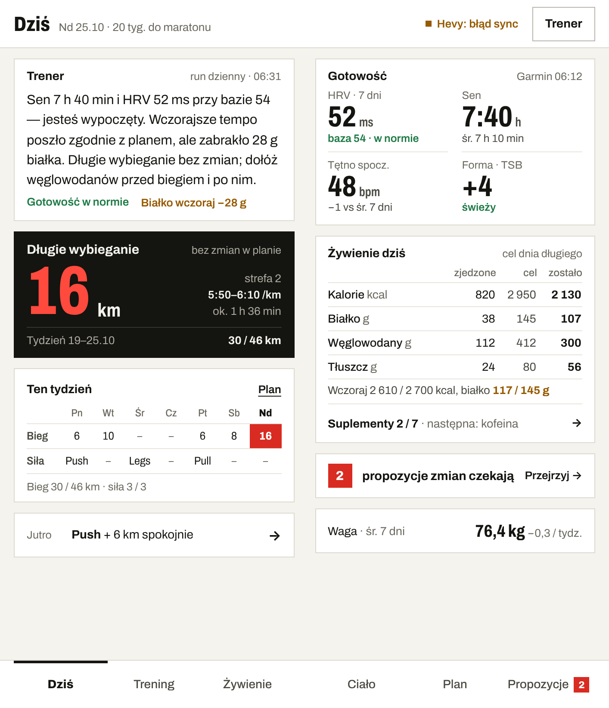
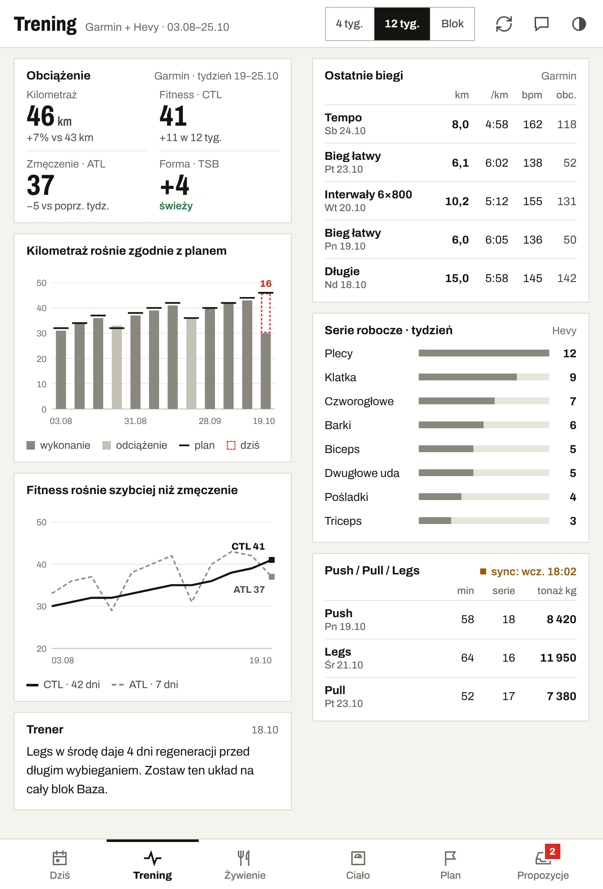
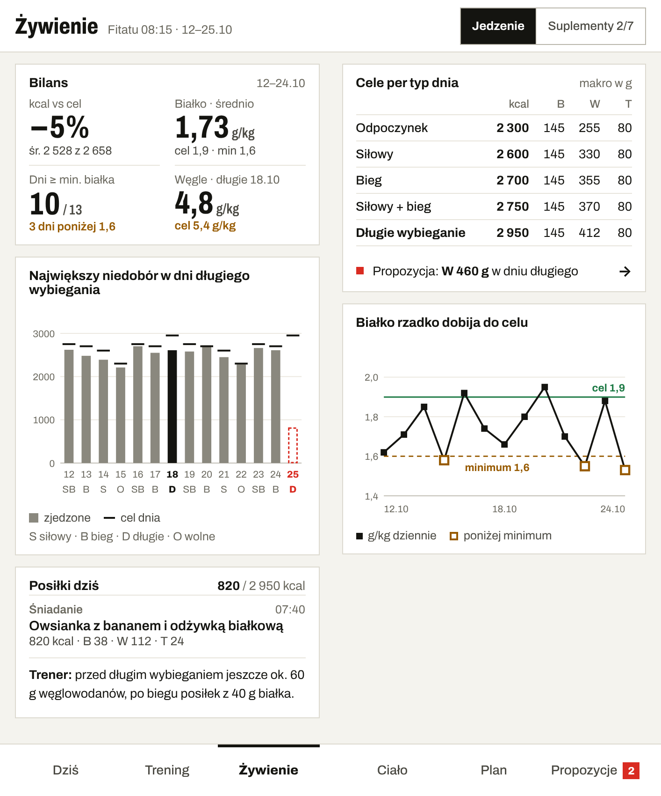
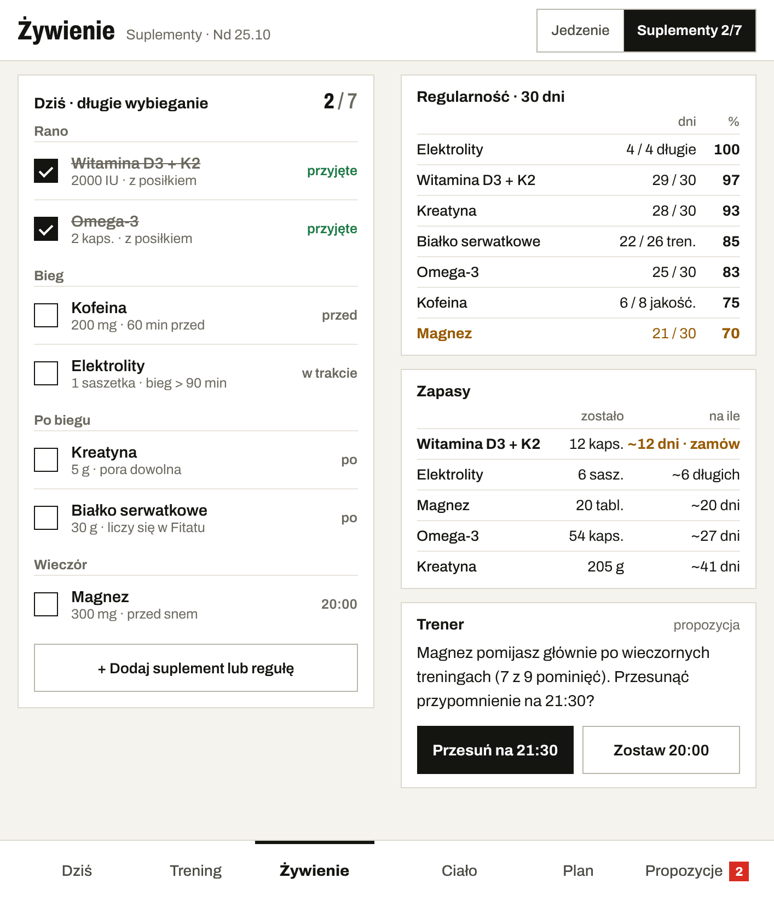
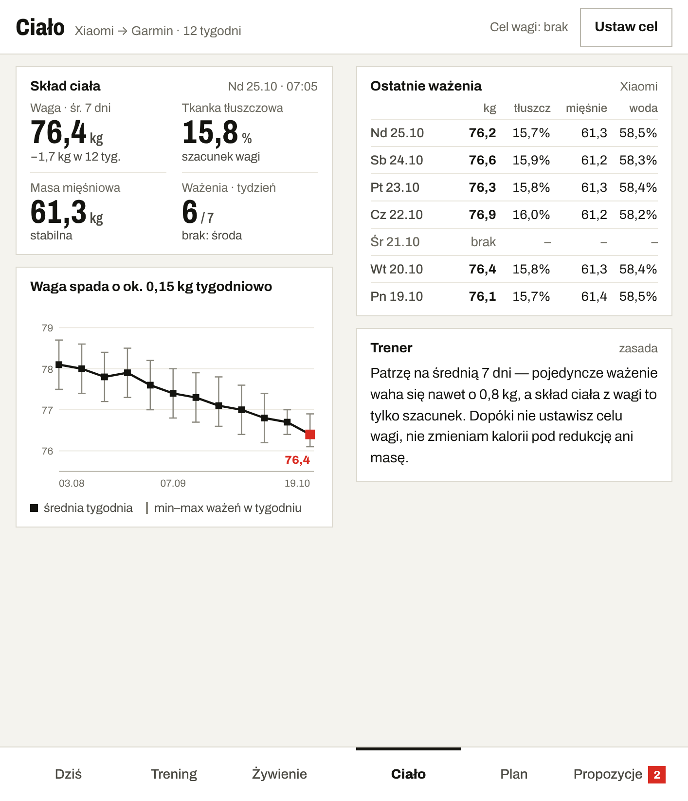
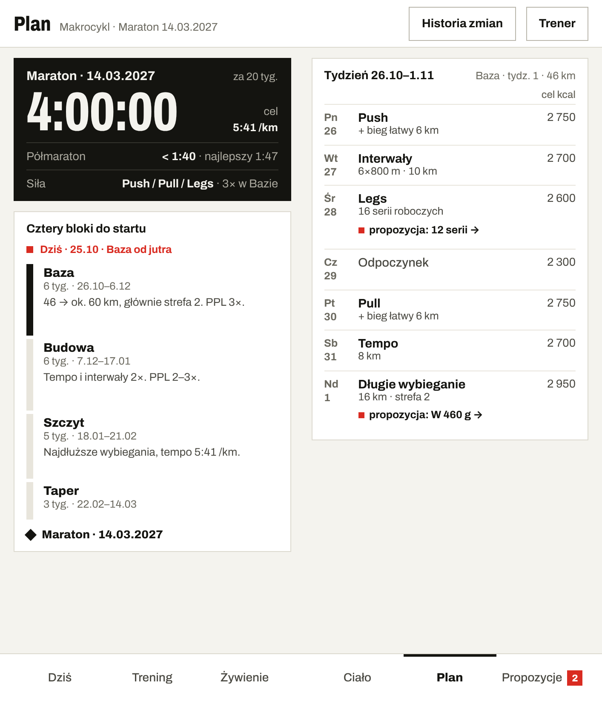
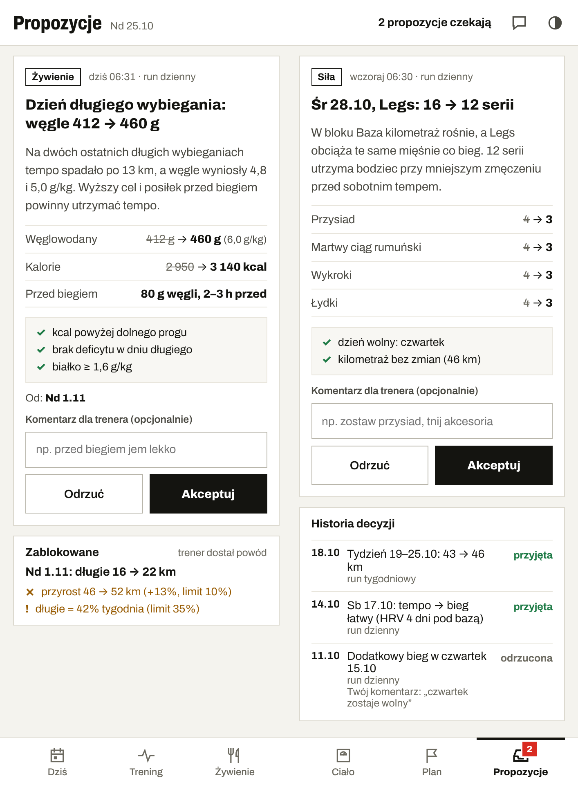
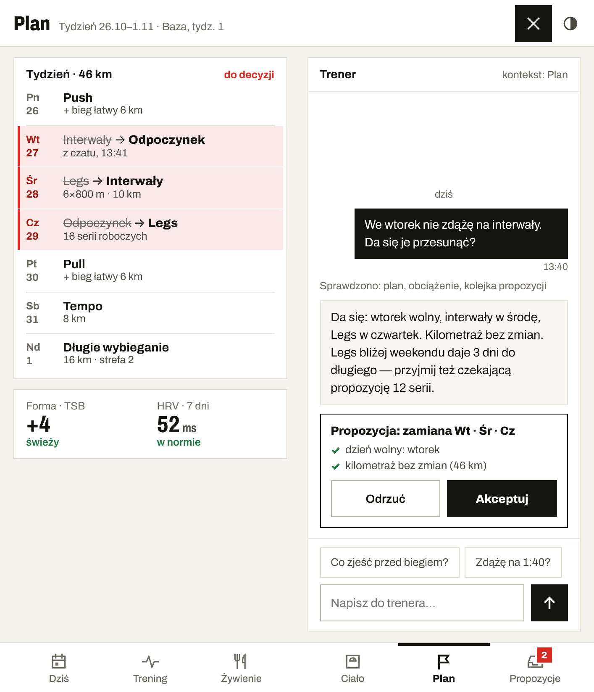
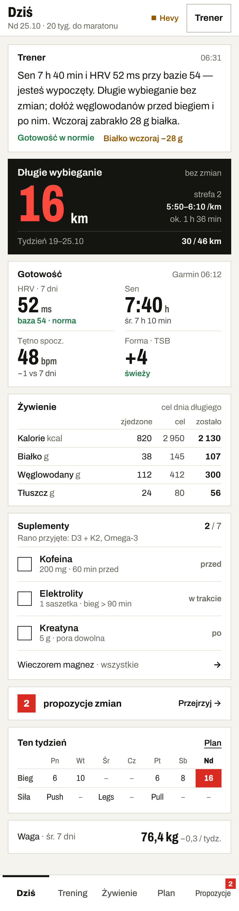
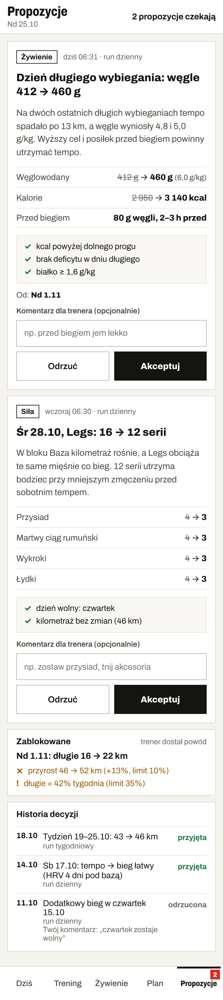
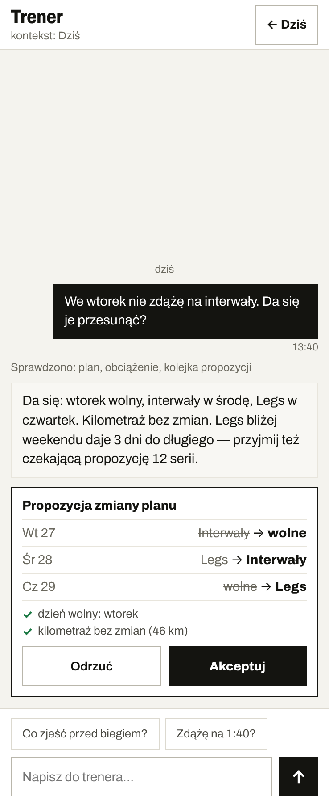
Desktop (web)
Przeglądarka od 1024 px, projekt na 1440 × 900; zasady w desktop.md. Otwieraj przez serwer makiet (http://localhost:8082), bo strony ładują wspólny desktop.css.